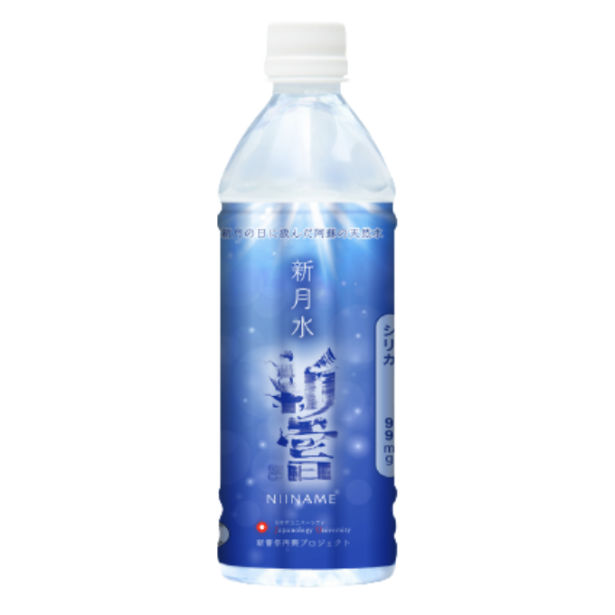
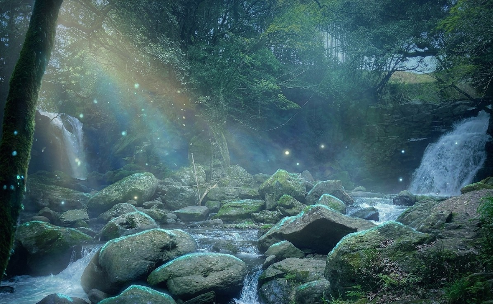
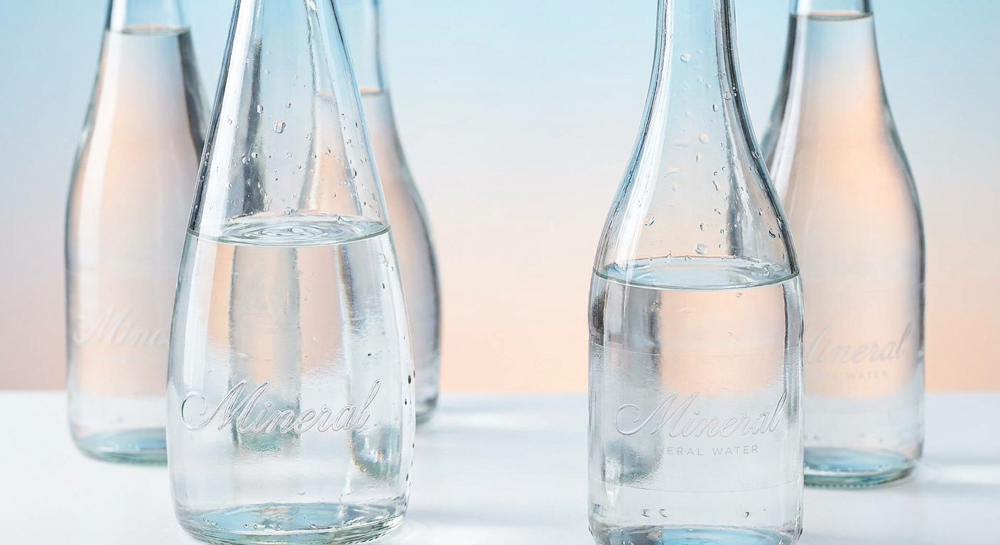
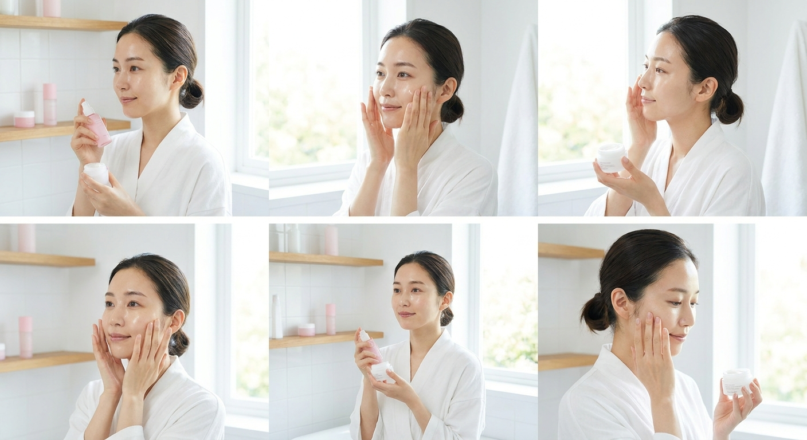

新月水
新月水 プレミアムシリカ水
飲みやすい軟水に、最高ランクのシリカ。
古来の知恵が宿る、数量限定の天然水。

なぜ、新月の時にしか
採水しないのか。
古来より、物事を始めるのは新月が吉とされてきました。シルク・ド・ソレイユも、新月に幕を開け満月に閉じる——それほど月の力は人の営みに深く根ざしています。
新月水は、熊本・阿蘇山系と九重連山の湧き水が交わる「夫婦滝」の地下から、新月の時期にだけ汲み上げられます。その月ごとの数量限定が、この水の希少性を守っています。

他のシリカ水と、
何が違うのか。
シリカ含有量、最高ランク
シリカ99mg/L・サルフェート34mg/L。肌・爪・髪・血管の健康維持に欠かせない「美のミネラル」を最大級に含有。
貴重な「軟水」のシリカ水
ほとんどのシリカ水は中硬水以上で飲みにくいもの。新月水は軟水なので口当たりがまろやかで、毎日続けやすい。
新月の時のみ、数量限定採水
毎月の新月にしか汲み上げない。その希少性が、水の鮮度と特別感を守ります。

「シリカ」は、
体内で作れないミネラル。
シリカ（ケイ素）は、ヒアルロン酸・コラーゲン・エラスチンを強化する働きを持つミネラルです。皮膚・爪・骨・血管に多く含まれ、加齢とともに減少しますが、体内では生成できません。
また、サルフェートは温泉にも含まれるミネラルで、体内の有害物質を排出し新陳代謝を高める働きがあります。日本産の水には少ない成分です。
| 成分 | 含有量 | 特徴 |
|---|---|---|
| シリカ | 99mg/L | 最高ランク |
| サルフェート | 34mg/L | 国産水では希少 |
| 硬度 | 軟水 | 飲みやすさ ◎ |

毎日飲むだけで、
内側からケアする。
美しさは、外側からだけでは作れません。肌のうるおい、髪のツヤ、爪のしなやかさ——それらはすべて、体の内側の状態が表れたもの。
シリカはヒアルロン酸・コラーゲン・エラスチンを体内で強化する働きがあります。サプリではなく水として取り入れることで、毎日無理なく続けられます。
肌のうるおいに
ヒアルロン酸・コラーゲンの生成をサポート。内側からハリをキープ。
髪・爪のツヤに
シリカは髪のツヤや強度にも関わるミネラル。飲み続けて変化を実感。
デトックスに
サルフェートが体内の不要なものを排出。温泉水にも含まれる成分。
健康維持に
シリカは血管の弾力性を保つ働きも。年齢を重ねるほど大切なミネラル。

月が満ちるように、
あなたも満たされていく。
新月は、始まりの時。何かを新しく始めたい夜、自分を整えたい夜に、月はそっと背中を押してくれます。
潮の満ち引き、植物の成長、女性のからだのリズム——月は古くから、自然のすべてと深くつながってきました。新月水は、そのサイクルの中でもっとも清らかな新月の時にだけ汲み上げられます。
新しいものを受け取る準備が整う時間だから。
毎朝、一杯の新月水を飲む。それだけで、自分の体と自然のリズムをゆっくりと合わせていく。そんな小さな習慣が、日々の自分を変えていきます。
🌑 新月とは
月が地球と太陽の間に入り、月面が見えなくなる日。古来より「物事の始まり」とされ、新嘗祭も新月に由来を持つ。毎月訪れる、リセットと再生のタイミング。

飲んだ方からの声
飲みやすいし、お水だから続けられそう。シリカは美のミネラルって聞いて毎日持ち歩いてます。
軟水なので子供と一緒に飲めるのが嬉しい。シリカ99mgとサルフェート34mg/Lという素晴らしさ。
硬水特有の重みやシリカ水の土っぽさが苦手でしたが、こちらはすごく軽やかなのどごしでグビグビ飲めます。
「新嘗」という名前に
込めた思い。
新嘗祭は、日本古来の五穀豊穣を感謝する祭り。その精神を現代に受け継ぎ、日本の大地の恵みを届けたいという思いからこの水は生まれました。
ひとつひとつ丁寧に採水された水。
ご購入
1本あたり 360円 ／ 送料別
工場直送・受注生産
受注後、工場より直送いたします。
離島・一部地域は別途ご相談ください。
よくある質問
新月採水のため、月ごとの数量限定です。在庫がなくなり次第、次の採水まで販売を停止します。
軟水のため飲みやすく、お子様にもお召し上がりいただけます。ただし、体調等が心配な場合は医師にご相談ください。
送料は別途かかります。ご注文時に表示されます。離島はご相談ください。
商品に問題がある場合はご連絡ください。詳細は特定商取引法に基づく表記をご確認ください。
業者様・販売店様へ
卸販売のご相談を承っております。エステサロン、飲食店、健康食品店など業種問わずお気軽にご連絡ください。
送信後、プレミアムシリカ事務局より確認メールをお送りします。
通常2〜3営業日以内にご返信いたします。